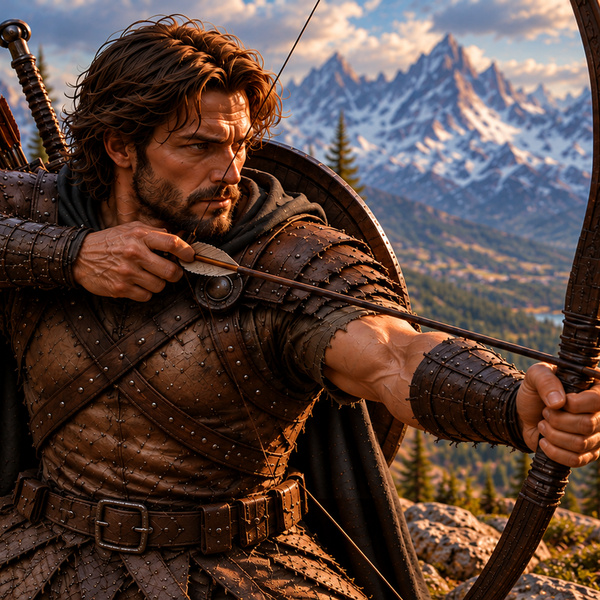
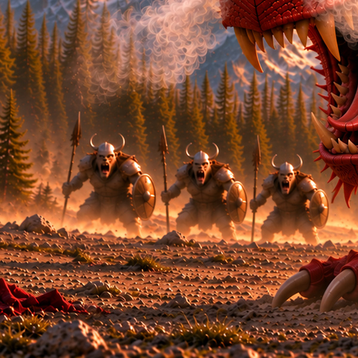
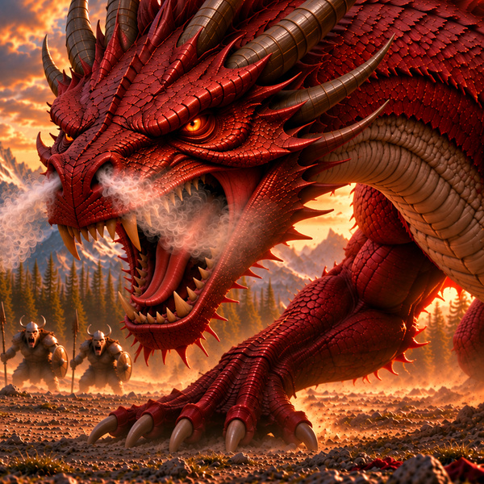
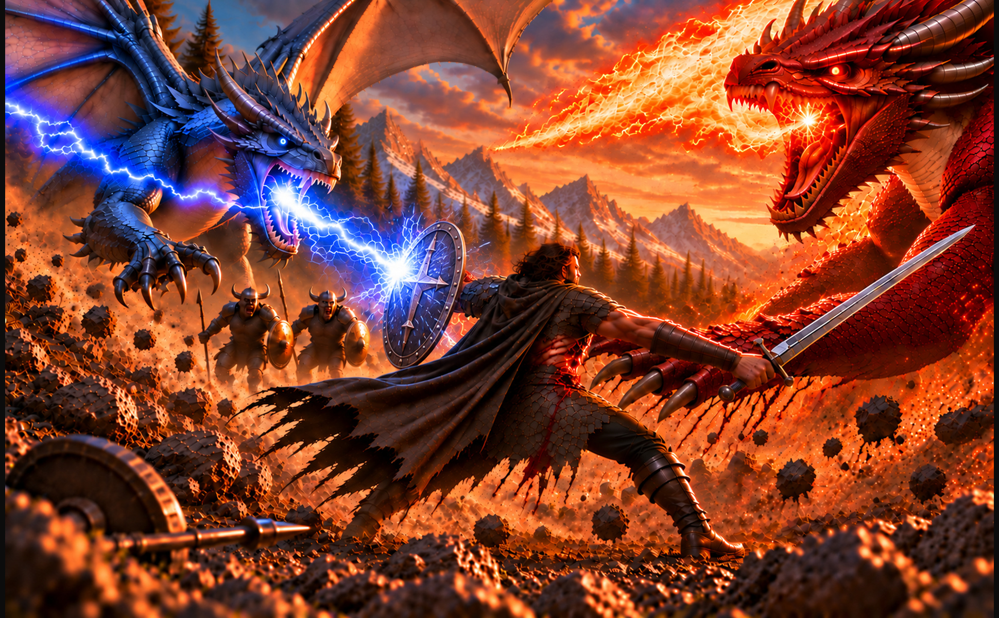

Erick The Unready
A bow, a blade, and a spell book give one warrior a fighting chance against overwhelming odds.
Erick L. Sokn · Published 2026

A bow, a blade, and a spell book give one warrior a fighting chance against overwhelming odds.

Small, quick, and opportunistic, the goblins look for an opening in the chaos of battle.

Fire, claws, and a fearsome reputation confront a hero who refuses to smell of fear.
The Avatar is a fantasy poem inspired by adventure role-playing games and the characters who inhabit them. It follows one seemingly unready hero through an encounter with dragons, goblins, magic, and a battle where both skill and luck play their roles.
First published in The Leading Edge in 2000, the poem began with my friend Bill, who wrote the opening lines through the question, “Why should I fear you dragon?” After Bill died, I finished the poem for him.
More than twenty-five years later, creating this illustrated edition gave me an opportunity to return to the world we had begun together. The illustrations expand that world beyond the words, revealing the sweep of the battlefield and the intensity of each encounter.
The illustrations were developed specifically around the story, its characters, and each scene using AI imaging technology, then edited and refined until they aligned with the images I had in mind.

Fifty full-color story illustrations carry the poem through a battle of magic, steel, and fire. Both the Kindle and paperback editions use landscape layouts, capturing the sweep of the battlefield and its opposing forces in a cinematic style.